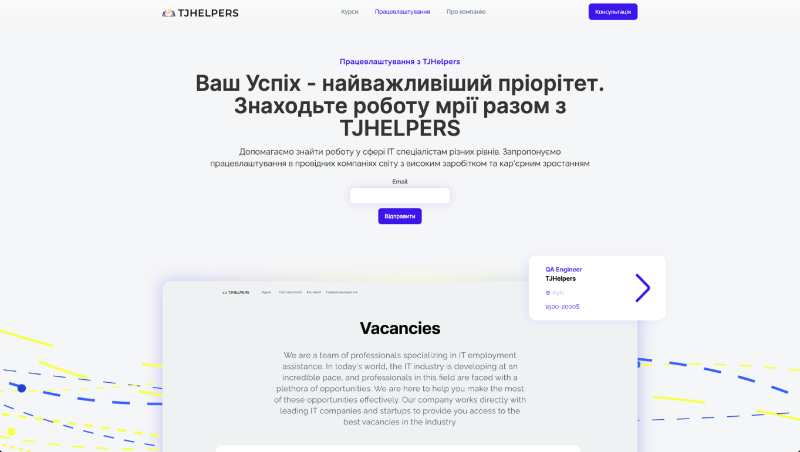

In the opening section of my portfolio case, I present a comprehensive journey through the creation and development of the TJHelpers brand. This case unfolds the strategic thinking and creative execution behind the brand's visual identity, from its vibrant color palette and typography to its innovative use of imagery on both print materials and digital platforms. Showcasing selected sections of the brand book and website, this case reveals how each element of TJHelpers’ identity was meticulously crafted to communicate the company's ethos and establish a meaningful connection with its audience. My role in bringing the brand's essence to life illustrates a blend of analytical acumen and creative flair, aimed at achieving a cohesive and resonant branding experience.


This project embodies a comprehensive redesign of the old TJHelpers website, with a specific mandate to retain the original logo while refreshing every other element. My portfolio showcases this transformative process, where I meticulously reimagined every aspect of the brand, breathing new life into its digital presence while preserving the spirit of the brand’s historical emblem.
The challenge was to design a new website that not only introduces users to the TJHelpers brand and details its expanded course offerings but also integrates seamlessly with a dedicated LMS system for student coursework. This required a harmonious blend of informative content and functional design to create a user-friendly platform that serves as both an informative showcase for prospective students and a gateway to their educational journey.
For the solution, I crafted a website taking inspiration from the streamlined educational approach of LinkedIn Learning. This allowed for a comprehensive presentation of courses, including detailed descriptions and curricula. Additionally, the site features a dedicated section for TJHelpers' employment assistance service, complete with step-by-step service descriptions and feedback forms to facilitate user engagement and support in job placement.
In the typography selection for the website, I emphasized clarity and modernity by choosing Inter as the primary font for headings and titles, bringing a crisp and professional look to the interface. For body text, Raleway was selected for its elegant and readable design, ensuring that detailed course descriptions and information are easily accessible and pleasant to read. This combination of fonts harmonizes the site’s aesthetic, enhancing user experience with visual consistency and legibility.
The website's color palette combines vibrant "Vivid Sapphire" and "Deep Amethyst" with neutral "Silken Mist" and "Industrial Slate," accented by "Radiant Sunflower" for highlights. This selection ensures a visually cohesive and user-friendly experience, reinforcing the brand's identity.
The merchandise line was designed to physically embody the essence of the TJHelpers brand, utilizing the vibrant colors and logos discussed earlier. Each item, from apparel to accessories, not only serves as a practical utility but also as a brand ambassador, carrying the identity and values of TJHelpers into everyday life. This thoughtful curation of merchandise extends the brand's reach, creating a tangible connection with the community and enhancing brand loyalty.
The refreshed TJHelpers website offers an intuitive interface designed for an in-depth exploration of courses and company services. Taking cues from the structure of LinkedIn Learning, it provides a robust platform for brand engagement and content interaction, while also streamlining access to comprehensive employment services. The site ensures easy navigation and convenience in finding information about a wide array of IT courses and professional opportunities.
I was at the helm of the website’s development, orchestrating the project management, designing the interface in Figma, and implementing the frontend on Webflow. This end-to-end involvement allowed for a cohesive vision throughout the process, ensuring that every element of the website was tailored to meet both aesthetic and functional objectives. My holistic approach guaranteed that the final product would not only embody the TJHelpers brand ethos but also provide a seamless, user-centered experience.